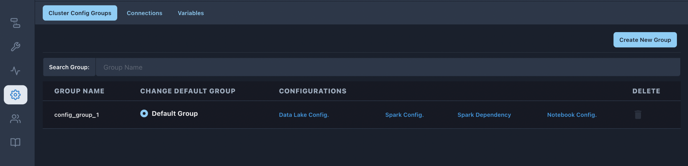
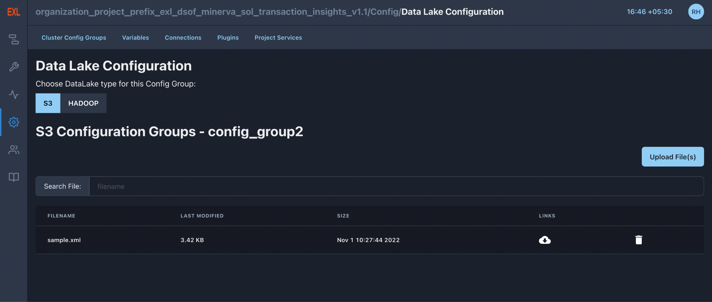

Configurations#
Cluster Configurations#
{kind=link}
This tab comprises all the configurations that a user can perform on their cluster. Only users with specific roles have permission to access this tab (as of now, only Admin).
For example, spark configuration is used to configure the spark tasks and is responsible for managing that particular service.
In the pipeline code specify what config group to use and the pipeline runs using those particular configurations saved in the configuration group. If there are multiple sets of config groups, specify in Pipeline which particular config-set be used.
Set ‘config_group’ = <YOUR_CONFIG_GROUP_NAME> in the code and then run the Pipeline.
Either add custom config groups or use default groups defined in the platform as shown in the above image.
An example to set configurations in a custom config group :
Data Lake Configurations#
S3 and Hadoop Configuration : Configurations files required for runtime environment settings of S3 or Hadoop cluster can be easily configured with the help of Data Lake Configuration Groups through orchestrator using the below steps:
On the Spark Config Group page, select the Data Lake Configuration link of the respective group. You will be redirected to a page containing configuration files for that group.
{kind=link}
New S3/Hadoop conf files can be added to that group using the Upload file(s) option. Please note that only XML files are allowed. The configurations within a file can be updated by clicking on the respective file name.
Spark Configuration#
Easily configure spark jobs by providing options through orchestrator using the below steps:
Select the Spark Configuration link of the respective group.
{kind=link}
2. Update existing arguments/configurations or add new ones by clicking on the ‘Add in Arguments’ buttons. Existing options can be deleted by clicking on the delete option, next to the fields.
3. Available jars to include on the driver and executor class paths are listed under the jars option. Similarly, the available list of .zip, .egg, or .py files to place on the PYTHONPATH for Python apps are listed under py-files.
To upload/delete these jars or python files, visit Cluster Configuration-> Spark Dependencies. Upon uploading new jars/python files under Spark Dependencies, the same will be added to the respective drop-down here.
Note: New changes get automatically picked up for all the NEWLY triggered spark jobs.
4. For PySpark jobs, to set python for the cluster (executors), in case a new python environment is required, configuration ‘spark.yarn.appMasterEnv.PYSPARK_PYTHON’ can be added under Spark Configuration tab and the same can be referred to in individual workflow task by using ‘python_conf’ attribute.
For additional details please refer to section Spark Configuration Guide
Notebook Configurations#
This feature enables the user to set resource parameters for notebooks (for each user). The configurable parameters for notebooks are as follows:
Cpu Limits (min and max) : CPU_GUARANTEE and CPU_LIMIT
Memory Limits (min and max) : MEM_GUARANTEE and MEM_LIMIT
{kind=link}
Kerberos Configurations#
Configurations for Kerberos clusters can be done by following the below steps:
On the Spark Configuration Groups page, select the Kerberos Configuration link of the respective group.
- For configuring Kerberos, you will have to specify the Kerberos
principal, and upload the krb5.conf and the key tab files.
- After uploading the keytab file, you have to select the keytab file.
These configurations, if added, are automatically applied to the spark jobs which use that configuration group.
Livy Configuration#
Livy enables programmatic, fault-tolerant, multi-tenant submission of Spark jobs from web/mobile apps. To configure default endpoints of sparkmagic kernels, the admin will have to configure Livy endpoints.
The username/password only needs to be filled when auth is Basic_Access.
Kerberos Authentication is also supported, you just basically have to set auth to Kerberos, and the kerberos configuration (keytab and krb5.conf) of your default config group will automatically be picked up.
{kind=link}
Variables#
Variables are a generic way to store and retrieve arbitrary content or settings as a simple key-value store within the workflow. Variables can be listed, created, updated, and deleted from the UI (Configuration -> Variables). In addition, json settings files can be bulk uploaded through the UI. While pipeline code contains defined constants and variables, it can be useful to have some variables or configuration items accessible and modifiable through the UI.
The variable view allows you to list, create, edit or delete the key-value pair of a variable used during jobs. Value of a variable will be hidden if the key contains any words in (‘password’, ‘secret’, ‘passwd’, ‘authorization’, ‘api_key’, ‘apikey’, ‘access_token’) by default, but can be configured to show in clear-text.
The second call assumes json content and will be deserialized into a bar. Note that Variable is a sqlalchemy model and can be used as such. The third call uses the default_var parameter with the valueNone, which either returns an existing value or None if the variable isn’t defined. The get function will throw a KeyError if the variable doesn’t exist and no default is provided.
Note: Although variables are Fernet keys encrypted in the database, they are accessible in the UI and therefore should not be used to store passwords or other sensitive data.
When to use each?
In general, since XComs are meant to be used to communicate between tasks and store the “conditions” that led to that value being created, they should be used for values that are going to be changing each time a workflow runs.
Variables on the other hand are much more natural places for constants like a list of tables that need to be synced, a configuration file that needs to be pulled from, or a list of IDs to dynamically generate tasks from. Both can be very powerful where appropriate, but can also be dangerous if misused.
Connections#
The connection information to external systems is stored in the workflow metadata database and managed in the UI (Configuration -> Connections). A conn_id is defined there and hostname / login / password / schema information attached to it. A user can create, delete, edit the connections based on the permissions given to that role of the user.
Pipelines can simply refer to the centrally managed conn_id without having to hard code any of this information anywhere. Many connections with the same conn_id can be defined, workflow will choose one connection randomly, allowing for some basic load balancing and fault tolerance when used in conjunction with retries.